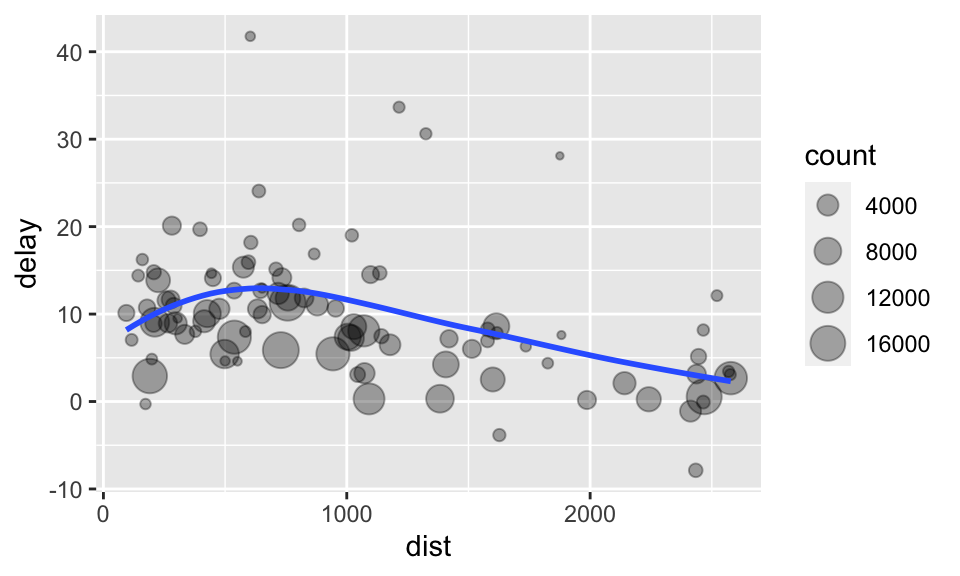
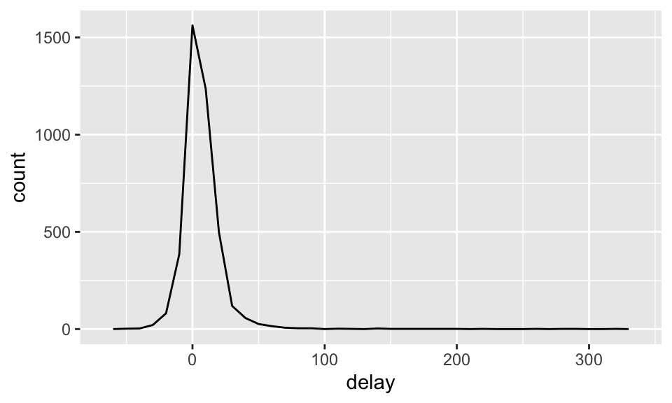
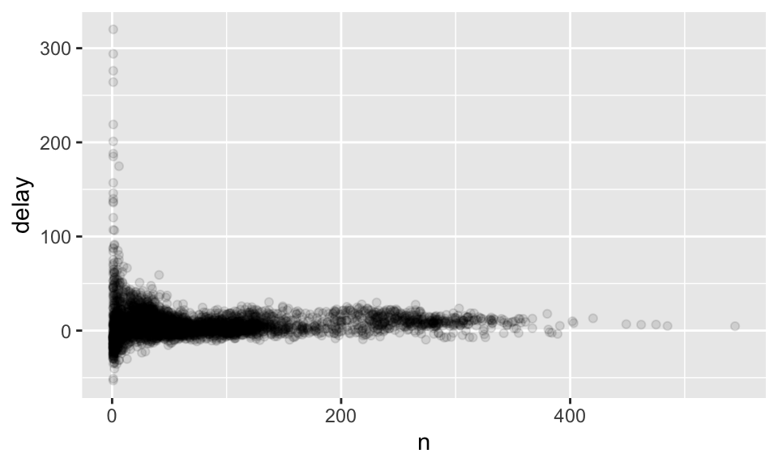
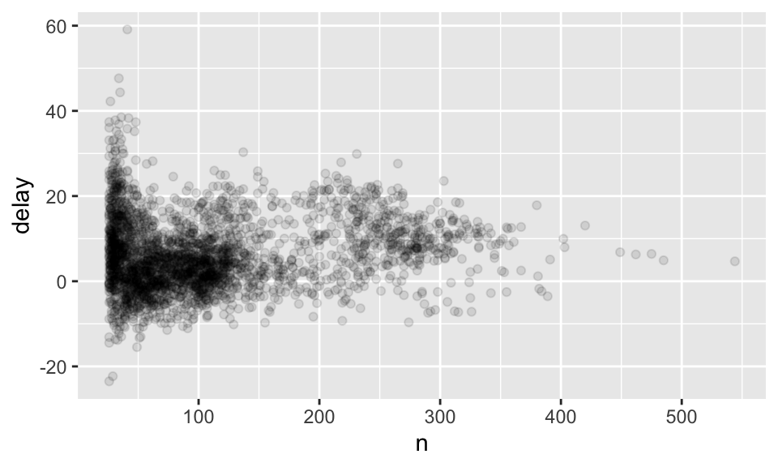
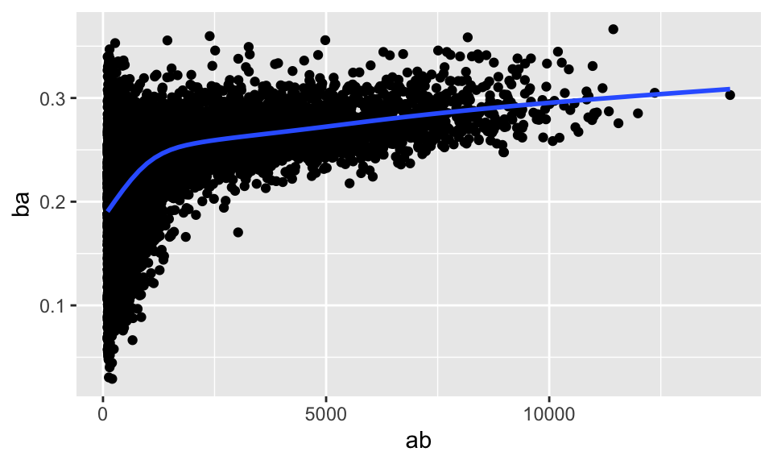

9 以 dplyr 轉換資料
本章為 Wickham and Grolemund (2016) 第 3 章內容。
9.1 前言
一拿到資料，除了以視覺化的方式快速洞察資料的樣貌，我們可能還需要：
新增新的變數。
統整。
重新命名變數。
重新排列觀察值的順序。
dplyr 的某些功能也能以 data.table 完成，並且兩者各有所長（data.table 的介紹可見節 4.1），而本章將要介紹 dplyr，為 tidyverse 中一個重要的成員，用以資料轉換。本章的任務是以 nycflights13 資料為例，簡介 dplyr 的使用。
9.1.1 前置作業
先載入 nycflights13 與 tidyverse：
library(nycflights13)
library(tidyverse)要注意的是，dplyr 與 base R 一套件 stats 的某些函數名稱相同，如 filter 與 lag。如果是先載入 stats，後載入 dplyr 的話，則使用 filter() 將會是 dplyr 的 filter，這時候如果還想使用 stats 的 filter()，則需使用其全名，即 stats::filter()。反之，如果是先載入 dplyr，後載入 stats，則使用 filter() 將會使用到 stats 的 filter()，這時候如果還想使用 dplyr 的 filter()，亦須使用全名，即 dplyr::filter()。
9.1.2 nycflights13
我們將使用 nycflights13 中的 flights 這個 dataset，此 data frame 包含 336,776 個觀察值，並有 19 個變數。
flights## # A tibble: 336,776 × 19
## year month day dep_time sched_dep_time dep_delay arr_time sched_arr_time
## <int> <int> <int> <int> <int> <dbl> <int> <int>
## 1 2013 1 1 517 515 2 830 819
## 2 2013 1 1 533 529 4 850 830
## 3 2013 1 1 542 540 2 923 850
## 4 2013 1 1 544 545 -1 1004 1022
## 5 2013 1 1 554 600 -6 812 837
## 6 2013 1 1 554 558 -4 740 728
## 7 2013 1 1 555 600 -5 913 854
## 8 2013 1 1 557 600 -3 709 723
## 9 2013 1 1 557 600 -3 838 846
## 10 2013 1 1 558 600 -2 753 745
## # … with 336,766 more rows, and 11 more variables: arr_delay <dbl>,
## # carrier <chr>, flight <int>, tailnum <chr>, origin <chr>, dest <chr>,
## # air_time <dbl>, distance <dbl>, hour <dbl>, minute <dbl>, time_hour <dttm>我們也可以看到，變數名稱下方有諸如 <int>、<dbl> 等代號，即變數的型態：
int代表整數。dbl代表 doubles 或實數。chr代表字元向量或字串。dttm代表日期時間（date-times）。lgl代表 logical，即TRUE或FALSE的向量。fctr代表 factors，即類別變數。date代表時間。
9.2 Filter Rows with filter()
我們可以用 filter 來選取某些觀察值，例如：
filter(flights, month == 1, day == 1)## # A tibble: 842 × 19
## year month day dep_time sched_dep_time dep_delay arr_time sched_arr_time
## <int> <int> <int> <int> <int> <dbl> <int> <int>
## 1 2013 1 1 517 515 2 830 819
## 2 2013 1 1 533 529 4 850 830
## 3 2013 1 1 542 540 2 923 850
## 4 2013 1 1 544 545 -1 1004 1022
## 5 2013 1 1 554 600 -6 812 837
## 6 2013 1 1 554 558 -4 740 728
## 7 2013 1 1 555 600 -5 913 854
## 8 2013 1 1 557 600 -3 709 723
## 9 2013 1 1 557 600 -3 838 846
## 10 2013 1 1 558 600 -2 753 745
## # … with 832 more rows, and 11 more variables: arr_delay <dbl>, carrier <chr>,
## # flight <int>, tailnum <chr>, origin <chr>, dest <chr>, air_time <dbl>,
## # distance <dbl>, hour <dbl>, minute <dbl>, time_hour <dttm>因為 filter() 會創造一個新的 data frame，而不會更動原先輸入的那個 data frame，所以
9.2.1 比較
我們可以用比較運算子，如 >=、<、<=、!= 或 == 等來選取觀察值。
9.2.2 邏輯運算子
我們也可以運用邏輯運算子，如 & 即 “and”，| 即 “or” 而 ! 即 “not”（切記不要用成 && 或 ||！）。例如我們可以透過以下的程式碼找出 month 恰等於 11 或 12 的觀察值：
filter(flights, month == 11 | month == 12)## # A tibble: 55,403 × 19
## year month day dep_time sched_dep_time dep_delay arr_time sched_arr_time
## <int> <int> <int> <int> <int> <dbl> <int> <int>
## 1 2013 11 1 5 2359 6 352 345
## 2 2013 11 1 35 2250 105 123 2356
## 3 2013 11 1 455 500 -5 641 651
## 4 2013 11 1 539 545 -6 856 827
## 5 2013 11 1 542 545 -3 831 855
## 6 2013 11 1 549 600 -11 912 923
## 7 2013 11 1 550 600 -10 705 659
## 8 2013 11 1 554 600 -6 659 701
## 9 2013 11 1 554 600 -6 826 827
## 10 2013 11 1 554 600 -6 749 751
## # … with 55,393 more rows, and 11 more variables: arr_delay <dbl>,
## # carrier <chr>, flight <int>, tailnum <chr>, origin <chr>, dest <chr>,
## # air_time <dbl>, distance <dbl>, hour <dbl>, minute <dbl>, time_hour <dttm>上述的程式碼也有一種簡寫，即 x %in% y，將會選出所有 x 等於其中一個 y 的觀察值。上述的程式碼因此可以寫成：
filter(flights, month %in% c(11, 12))我們如果想要找到 arr_delay 不超過 120 且 dep_delay 也不超過 120 的觀察值，下面兩行等價的程式碼都能達成：
filter(flights, !(arr_delay > 120 | dep_delay > 120))
filter(flights, arr_delay <= 120, dep_delay <= 120)9.2.3 缺漏值
filter() 只會選取邏輯判斷為 TRUE 的觀察值，而排除 FALSE 或 NA。如果也想選取 NA，則要明白地寫出來：
df <- tibble(x = c(1, NA, 3))
filter(df, x > 1)## # A tibble: 1 × 1
## x
## <dbl>
## 1 3filter(df, is.na(x) | x > 1)## # A tibble: 2 × 1
## x
## <dbl>
## 1 NA
## 2 39.3 Arrange Rows with arrange()
使用 arrange() 可以改變觀察值的排列順序。
arrange(flights, year, month, day) # 先排前面的引數，由小至大排列## # A tibble: 336,776 × 19
## year month day dep_time sched_dep_time dep_delay arr_time sched_arr_time
## <int> <int> <int> <int> <int> <dbl> <int> <int>
## 1 2013 1 1 517 515 2 830 819
## 2 2013 1 1 533 529 4 850 830
## 3 2013 1 1 542 540 2 923 850
## 4 2013 1 1 544 545 -1 1004 1022
## 5 2013 1 1 554 600 -6 812 837
## 6 2013 1 1 554 558 -4 740 728
## 7 2013 1 1 555 600 -5 913 854
## 8 2013 1 1 557 600 -3 709 723
## 9 2013 1 1 557 600 -3 838 846
## 10 2013 1 1 558 600 -2 753 745
## # … with 336,766 more rows, and 11 more variables: arr_delay <dbl>,
## # carrier <chr>, flight <int>, tailnum <chr>, origin <chr>, dest <chr>,
## # air_time <dbl>, distance <dbl>, hour <dbl>, minute <dbl>, time_hour <dttm>使用 desc() 可以製造由大至小的排列，如：
arrange(flights, desc(dep_time), day)## # A tibble: 336,776 × 19
## year month day dep_time sched_dep_time dep_delay arr_time sched_arr_time
## <int> <int> <int> <int> <int> <dbl> <int> <int>
## 1 2013 4 2 2400 2359 1 339 343
## 2 2013 9 2 2400 2359 1 411 340
## 3 2013 4 4 2400 2355 5 347 345
## 4 2013 12 5 2400 2359 1 427 440
## 5 2013 2 7 2400 2359 1 432 436
## 6 2013 2 7 2400 2359 1 443 444
## 7 2013 7 7 2400 1950 250 107 2130
## 8 2013 12 9 2400 2359 1 432 440
## 9 2013 12 9 2400 2250 70 59 2356
## 10 2013 8 10 2400 2245 75 110 1
## # … with 336,766 more rows, and 11 more variables: arr_delay <dbl>,
## # carrier <chr>, flight <int>, tailnum <chr>, origin <chr>, dest <chr>,
## # air_time <dbl>, distance <dbl>, hour <dbl>, minute <dbl>, time_hour <dttm>缺漏值永遠排在最後，無論採用由小至大或由大至小的排列方式：
df <- tibble(x = c(5, 2, NA))
arrange(df, x)## # A tibble: 3 × 1
## x
## <dbl>
## 1 2
## 2 5
## 3 NAarrange(df, desc(x))## # A tibble: 3 × 1
## x
## <dbl>
## 1 5
## 2 2
## 3 NA9.4 Select Columns with select()
filter() 與 arrange() 處理的對象是 rows，而 select() 處理的則是 columns。我們可以透過 select()，快速地選取指定的變數，如：
select(flights, year, month, day)## # A tibble: 336,776 × 3
## year month day
## <int> <int> <int>
## 1 2013 1 1
## 2 2013 1 1
## 3 2013 1 1
## 4 2013 1 1
## 5 2013 1 1
## 6 2013 1 1
## 7 2013 1 1
## 8 2013 1 1
## 9 2013 1 1
## 10 2013 1 1
## # … with 336,766 more rows或者：
select(flights, year:day) # 選擇 year 至 day 之間所有的 columns
select(flights, -(year:day)) # 選擇 year 至 day 以外的所有 columns9.4.1 常用的 5 個函數
select() 之中還有幾個常用的函數可用，如：
start_with("abc")：選取名稱以 “abc” 開頭的變數。ends_with("abc")：選取名稱以 “abc” 結尾的變數。contains("abc")：選取名稱中包含 “abc” 的變數。matches("abc$")：選取名稱符合正規表示式的變數，此例中為名稱以 “abc” 結尾的變數。正規表示式將會在第 15 章介紹。num_range("x", 1:3)：選取名為x1、x2、x3的變數。
以下為範例：
select(flights, starts_with("d")) # 選取名稱以 "d" 開頭的變數## # A tibble: 336,776 × 5
## day dep_time dep_delay dest distance
## <int> <int> <dbl> <chr> <dbl>
## 1 1 517 2 IAH 1400
## 2 1 533 4 IAH 1416
## 3 1 542 2 MIA 1089
## 4 1 544 -1 BQN 1576
## 5 1 554 -6 ATL 762
## 6 1 554 -4 ORD 719
## 7 1 555 -5 FLL 1065
## 8 1 557 -3 IAD 229
## 9 1 557 -3 MCO 944
## 10 1 558 -2 ORD 733
## # … with 336,766 more rowsselect(flights, ends_with("t")) # 選取名稱以 "t" 結尾的變數## # A tibble: 336,776 × 2
## flight dest
## <int> <chr>
## 1 1545 IAH
## 2 1714 IAH
## 3 1141 MIA
## 4 725 BQN
## 5 461 ATL
## 6 1696 ORD
## 7 507 FLL
## 8 5708 IAD
## 9 79 MCO
## 10 301 ORD
## # … with 336,766 more rowsselect(flights, contains("ep")) # 選取名稱中包含 "ep" 的變數## # A tibble: 336,776 × 3
## dep_time sched_dep_time dep_delay
## <int> <int> <dbl>
## 1 517 515 2
## 2 533 529 4
## 3 542 540 2
## 4 544 545 -1
## 5 554 600 -6
## 6 554 558 -4
## 7 555 600 -5
## 8 557 600 -3
## 9 557 600 -3
## 10 558 600 -2
## # … with 336,766 more rowsselect(flights, matches("time$")) # 選取名稱以 "time" 結尾的變數## # A tibble: 336,776 × 5
## dep_time sched_dep_time arr_time sched_arr_time air_time
## <int> <int> <int> <int> <dbl>
## 1 517 515 830 819 227
## 2 533 529 850 830 227
## 3 542 540 923 850 160
## 4 544 545 1004 1022 183
## 5 554 600 812 837 116
## 6 554 558 740 728 150
## 7 555 600 913 854 158
## 8 557 600 709 723 53
## 9 557 600 838 846 140
## 10 558 600 753 745 138
## # … with 336,766 more rows9.4.2 重新命名：rename()
有兩種重新命名變數的方法：
使用
select(資料, 新變數名稱 = 舊變數名稱, everything())。之所以要加everything是因為如果不加，select()將會丟棄其他所有變數，而everything()的用途即在補上其他 columns。使用
rename(資料, 新變數名稱 = 舊變數名稱)。
此外，因為 everything() 可以補上其他沒有選到的 columns，所以也可以用來移動變數的順序，如我們想要把 dep_time 與 arr_time 移到前面的話，即：
select(flights, dep_time, arr_time, everything())## # A tibble: 336,776 × 19
## dep_time arr_time year month day sched_dep_time dep_delay sched_arr_time
## <int> <int> <int> <int> <int> <int> <dbl> <int>
## 1 517 830 2013 1 1 515 2 819
## 2 533 850 2013 1 1 529 4 830
## 3 542 923 2013 1 1 540 2 850
## 4 544 1004 2013 1 1 545 -1 1022
## 5 554 812 2013 1 1 600 -6 837
## 6 554 740 2013 1 1 558 -4 728
## 7 555 913 2013 1 1 600 -5 854
## 8 557 709 2013 1 1 600 -3 723
## 9 557 838 2013 1 1 600 -3 846
## 10 558 753 2013 1 1 600 -2 745
## # … with 336,766 more rows, and 11 more variables: arr_delay <dbl>,
## # carrier <chr>, flight <int>, tailnum <chr>, origin <chr>, dest <chr>,
## # air_time <dbl>, distance <dbl>, hour <dbl>, minute <dbl>, time_hour <dttm>9.5 Add New Variables with mutate()
我們還會想新增 columns 為既有 columns 的函數，那就要使用 mutate()。我們先新建一個小一點的表格，方便查看結果，然後新增兩個 columns，其一為 gain，為 arr_delay 減去 ep_delay；其一為 speed，為 distance 除以 air_time 再乘以 60：
flights_sml <- select(flights, year:day, ends_with("delay"), distance, air_time)
mutate(flights_sml,
gain = arr_delay - dep_delay,
speed = distance / air_time * 60)## # A tibble: 336,776 × 9
## year month day dep_delay arr_delay distance air_time gain speed
## <int> <int> <int> <dbl> <dbl> <dbl> <dbl> <dbl> <dbl>
## 1 2013 1 1 2 11 1400 227 9 370.
## 2 2013 1 1 4 20 1416 227 16 374.
## 3 2013 1 1 2 33 1089 160 31 408.
## 4 2013 1 1 -1 -18 1576 183 -17 517.
## 5 2013 1 1 -6 -25 762 116 -19 394.
## 6 2013 1 1 -4 12 719 150 16 288.
## 7 2013 1 1 -5 19 1065 158 24 404.
## 8 2013 1 1 -3 -14 229 53 -11 259.
## 9 2013 1 1 -3 -8 944 140 -5 405.
## 10 2013 1 1 -2 8 733 138 10 319.
## # … with 336,766 more rows也可以在後面的引數中，使用前面的引數剛新增出來的 columns，如：
mutate(flights_sml,
gain = arr_delay - dep_delay,
hours = air_time / 60,
gain_per_hour = gain / hours)只想要保存新變數的話，可以用 transmute()，如：
transmute(flights_sml,
gain = arr_delay - dep_delay,
hours = air_time / 60,
gain_per_hour = gain / hours)## # A tibble: 336,776 × 3
## gain hours gain_per_hour
## <dbl> <dbl> <dbl>
## 1 9 3.78 2.38
## 2 16 3.78 4.23
## 3 31 2.67 11.6
## 4 -17 3.05 -5.57
## 5 -19 1.93 -9.83
## 6 16 2.5 6.4
## 7 24 2.63 9.11
## 8 -11 0.883 -12.5
## 9 -5 2.33 -2.14
## 10 10 2.3 4.35
## # … with 336,766 more rows而如果新建的變數名稱與既有的變數名稱相同，則會覆蓋之，即既有的變數值被替換成 mutate() 中所指定的運算方法所得的變數值。
9.5.1 Useful Creation Functions
創建新 columns 有一些常用的、有用的運算子或函數：
Arithmetic operators.
+,-,*,/,^.Modular arithmetic.
%/%and%%.%/%為整數除法，而%%為餘數。如：
30 %/% 4等於 4；3 %% 2等於 1。
Logs.
log(),log2(),log10()Logical comparisons.
<,<=,>,>=,!=.Offsets.
lead()andlag().lead()可以用來指涉 leading values，而lag()可以用來指涉 lagging values。與group_by()一起使用有很大的用處。例如
x <- 1 : 10。lead(x)會是2 3 4 5 6 7 8 9 10 NA，而lag(x)會是NA 1 2 3 4 5 6 7 8 9。
Logical comparisons.
<,<=,>,>=,!=.Ranking.
min_rank(),row_number(),dense_rank(),percent_rank(),cume_dist(),ntile().min_rank()：依序輸入的向量中的元素依序報出向量各元素的大小排名（由小而大），重複的順序將會跳號。如y <- c(3, 4, 5, 2, 1)，第一個元素是第 3 小，第二個元素是第 4 小，第三個元素是第 5 小，第四個元素是第 2 小，第五個元素最小，因此回傳3 4 5 2 1。而我們也可以搭配使用desc()，則第一個元素是第 3 大，第二個元素是第 2 大，以此類推，將會回傳3 2 1 4 5。row_number：類似min_rank()，但如果有重複的元素，將會把較前面的排的比較小。例如z <- c(1, 1, 0, 2, 3)，輸入min_rank()將會回傳2 2 1 4 5；而輸入row_number()將會回傳2 3 1 4 5。dense_rank()：類似min_rank()，但重複的順序不會跳號，如z <- c(1, 1, 0, 2, 3)，輸入dense_rank()將會回傳2 2 1 3 4。percent_rank(y)：min_rank()的百分比版本。cume_dist(y)：min_rank()的累積版本。
y<-c(1, 2, 2, NA, 3, 4)
min_rank(y)
# [1] 1 2 2 NA 4 5
row_number(y)
# [1] 1 2 3 NA 4 5
row_number(y)
# [1] 1 2 3 NA 4 5
dense_rank(y)
# [1] 1 2 2 NA 3 4
percent_rank(y)
# [1] 0.00 0.25 0.25 NA 0.75 1.00
cume_dist(y)
# [1] 0.2 0.6 0.6 NA 0.8 1.0Cumulative and rolling aggregates.
cumsum(),cumprod(),cummin(),cummax(),cummean().前四者為 R 本身提供，
cummean()為dplyr所提供。分別可以計算 running sums、products、mins、maxes 與 cumulative means，例如：
x <- 1 : 10
cumsum(x)
# [1] 1 3 6 10 15 21 28 36 45 55
cumprod(x)
# [1] 1 2 6 24 120 720 5040 40320 362880
# [10] 3628800
cummin(x)
# [1] 1 1 1 1 1 1 1 1 1 1
cummax(x)
# [1] 1 2 3 4 5 6 7 8 9 10
cummean(x)
# [1] 1.0 1.5 2.0 2.5 3.0 3.5 4.0 4.5 5.0 5.59.6 Grouped Summaries with summarize()
summarize() 會把整個表格整理成單一個 row。我們可以使用 summarize() 來計算全部航班的 dep_delay 的平均值：
summarize(flights, delay = mean(dep_delay, na.rm = TRUE))## # A tibble: 1 × 1
## delay
## <dbl>
## 1 12.6其中，使用 na.rm = TRUE 的原因在避免計算出一大堆 NA，見節 9.6.2。
但 summarize() 要搭配上 group_by() 才顯得更強大。如果我們想要知道每天的 dep_delay 的平均到底是多少與每天有多少個航班，我們可以使用 group_by()，將 flights 這個 dataset 依照 year、month、day 分組，然後指派給變數 by_day。接著，我們就可以使用 summarize()，並定義兩個新變數欄位為 delay 與 count，如：
by_day <- group_by(flights, year, month, day)
summarize(by_day, delay = mean(dep_delay, na.rm = TRUE), count = n())## `summarise()` has grouped output by 'year', 'month'. You can override using the `.groups` argument.## # A tibble: 365 × 5
## # Groups: year, month [12]
## year month day delay count
## <int> <int> <int> <dbl> <int>
## 1 2013 1 1 11.5 842
## 2 2013 1 2 13.9 943
## 3 2013 1 3 11.0 914
## 4 2013 1 4 8.95 915
## 5 2013 1 5 5.73 720
## 6 2013 1 6 7.15 832
## 7 2013 1 7 5.42 933
## 8 2013 1 8 2.55 899
## 9 2013 1 9 2.28 902
## 10 2013 1 10 2.84 932
## # … with 355 more rows9.6.1 以 Pipe 結合多重運算
如果我們想知道距離與每個地點的平均延誤的關係，我們可以：
使用
group_by，依據dest（終點）來分類flights。使用
summarize()製造一個新的 tibble，列出各個dest的次數（count）、平均距離（dist）與平均抵達延誤（delay）。使用
filter()，第一個引數放入剛剛新建的表格，然後移除 noise（出現次數小於 20 次者），並移除 “HNL” 這個終點站。
上面的步驟正如：
by_dest <- group_by(flights, dest)
delay <- summarize(by_dest, count = n(), dist = mean(distance, na.rm = TRUE),
delay = mean(arr_delay, na.rm = TRUE)) # 整理資料
delay <- filter(delay, count > 20, dest != "HNL") # 移除噪點
ggplot(data = delay, mapping = aes(x = dist, y = delay)) +
geom_point(aes(size = count), alpha = 1/3) +
geom_smooth(method = 'loess', formula = "y ~ x", se = FALSE) # 繪圖
但這種撰寫程式碼的方式稍嫌惱人，因為我們還要幫中間的 data frame 取名字。使用 pipe %>% 可以解決此問題：
delays <- flights %>%
group_by(dest) %>%
summarize(count = n(),
dist = mean(distance, na.rm = TRUE),
delay = mean(arr_delay, na.rm = TRUE)) %>%
filter(count > 20, dest != "HNL")%>% 可以讀成 “then”，即我們先使用 group_by 分組，然後使用 summarize() 計算次數與平均數，然後使用 filter() 過濾掉噪點與不想要的觀察值。這背後的邏輯就是 x %>% f(y) 即 f(x, y)，而 x %>% f(y) %>% g(z) 即 g(f(x, y), z)。
9.6.2 缺漏值
前開使用的 na.rm 引數的功能即決定要不要在計算前移除掉 NA。如果我們沒有設定 na.rm = TRUE，則我們將會製造出一大堆 NA，因為 NA 無論做什麼運算都會得到 NA，所以只要有其中一個觀察值的 dep_delay 為 NA，那一整天的平均就會是 NA，如：
flights %>%
group_by(year, month, day) %>%
summarize(mean = mean(dep_delay)) %>%
group_by(mean) %>%
summarize(count = n())## `summarise()` has grouped output by 'year', 'month'. You can override using the `.groups` argument.## # A tibble: 8 × 2
## mean count
## <dbl> <int>
## 1 0.145 1
## 2 0.241 1
## 3 1.61 1
## 4 3.53 1
## 5 6.06 1
## 6 7.78 1
## 7 7.93 1
## 8 NA 358我們可以發現製造了 358 個 NA！以下就不會產生上面的問題了：
flights %>%
group_by(year, month, day) %>%
summarize(mean = mean(dep_delay, na.rm = TRUE))在此，NA 代表航班取消；我們也可以先把 NA 的地方去除掉，如：
not_cancelled <- flights %>%
filter(!is.na(dep_delay), !is.na(arr_delay))
not_cancelled %>%
group_by(year, month, day) %>%
summarize(mean = mean(dep_delay))## `summarise()` has grouped output by 'year', 'month'. You can override using the `.groups` argument.## # A tibble: 365 × 4
## # Groups: year, month [12]
## year month day mean
## <int> <int> <int> <dbl>
## 1 2013 1 1 11.4
## 2 2013 1 2 13.7
## 3 2013 1 3 10.9
## 4 2013 1 4 8.97
## 5 2013 1 5 5.73
## 6 2013 1 6 7.15
## 7 2013 1 7 5.42
## 8 2013 1 8 2.56
## 9 2013 1 9 2.30
## 10 2013 1 10 2.84
## # … with 355 more rows9.6.3 計數
我們可以加入計數（n()）或非缺漏值的計數（sum(!is.na(x))），避免我們從很小的樣本得出結論。
delays <- not_cancelled %>%
group_by(tailnum) %>%
summarize(delay = mean(arr_delay))
ggplot(data = delays, mapping = aes(x = delay)) +
geom_freqpoly(binwidth = 10)
我們可以發現，有些航班甚至可以延遲超過 300 秒！但我們如果畫出散佈圖就會發現，如果只有少數幾個航班的日子，取平均以後其變異就會非常大，即樣本越大，變異越小（類似大數法則中，當樣本越來越大，估計參數會機率收斂到母體參數的概念），如：
delays <- not_cancelled %>%
group_by(tailnum) %>%
summarize(delay = mean(arr_delay, na.rm = TRUE),n=n())
ggplot(data = delays, mapping = aes(x = n, y = delay)) +
geom_point(alpha = 1/10)
所以我們其實可以移除掉樣本過小的日期，如：
delays %>%
filter(n > 25) %>%
ggplot(mapping = aes(x = n, y = delay)) + geom_point(alpha = 1/10)
我們接下來使用 Lahman 這個套件中的 Batting 這個 data frame 來討論棒球比賽中打擊者的表現與擊球次數的關係。
library(Lahman) # 載入 Lahman
batting <- as_tibble(Lahman::Batting) # 將 Batting 轉換成 tibble 型態
batters <- batting %>%
group_by(playerID) %>%
summarize(ba = sum(H, na.rm = TRUE) / sum(AB, na.rm = TRUE),
ab = sum(AB, na.rm = TRUE) )
# ba 為 batting average，即打擊率，衡量打擊的能力
# ab 為 at bat，即上場打擊的機會
batters %>%
filter(ab > 100) %>%
ggplot(mapping = aes(x = ab, y = ba)) + geom_point() +
geom_smooth(se = FALSE)## `geom_smooth()` using method = 'gam' and formula 'y ~ s(x, bs = "cs")'
我們可以發現，打擊次數越多的球員，打擊率也就越高，兩者有正向的關係；這可能是因為球隊會讓能打球的球員上場。
9.6.4 有用的歸納函數
- Measures of location:
mean(x),median(x).
not_cancelled %>%
group_by(year, month, day) %>%
summarize(
# average delay:
avg_delay1 = mean(arr_delay),
# average positive delay:
avg_delay2 = mean(arr_delay[arr_delay > 0])
)## `summarise()` has grouped output by 'year', 'month'. You can override using the `.groups` argument.## # A tibble: 365 × 5
## # Groups: year, month [12]
## year month day avg_delay1 avg_delay2
## <int> <int> <int> <dbl> <dbl>
## 1 2013 1 1 12.7 32.5
## 2 2013 1 2 12.7 32.0
## 3 2013 1 3 5.73 27.7
## 4 2013 1 4 -1.93 28.3
## 5 2013 1 5 -1.53 22.6
## 6 2013 1 6 4.24 24.4
## 7 2013 1 7 -4.95 27.8
## 8 2013 1 8 -3.23 20.8
## 9 2013 1 9 -0.264 25.6
## 10 2013 1 10 -5.90 27.3
## # … with 355 more rowsMeasures of spread:
sd(x),IQR(x),mad(x).- 標準差、四分位距（interquartile range）與絕對中位差（median absolute deviation，即原數據減去中位數所得的新數據的絕對值的中位數）。
- \(\mbox{MAD} = \mbox{median}(|X_i - \mbox{median}|)\).
# 算出不同目的地的距離標準差，並降冪排列
not_cancelled %>%
group_by(dest) %>%
summarize(distance_sd = sd(distance)) %>%
arrange(desc(distance_sd))## # A tibble: 104 × 2
## dest distance_sd
## <chr> <dbl>
## 1 EGE 10.5
## 2 SAN 10.4
## 3 SFO 10.2
## 4 HNL 10.0
## 5 SEA 9.98
## 6 LAS 9.91
## 7 PDX 9.87
## 8 PHX 9.86
## 9 LAX 9.66
## 10 IND 9.46
## # … with 94 more rowsMeasures of rank:
min(x),quantile(x, 0.25),max(x).quantile(x, 0.25)即大於 25 % 的樣本但小於剩餘的 75 % 者。
# 算出每天第一班與最後一班班機
not_cancelled %>%
group_by(year, month, day) %>%
summarize(
first = min(dep_time),
last = max(dep_time)
)## `summarise()` has grouped output by 'year', 'month'. You can override using the `.groups` argument.## # A tibble: 365 × 5
## # Groups: year, month [12]
## year month day first last
## <int> <int> <int> <int> <int>
## 1 2013 1 1 517 2356
## 2 2013 1 2 42 2354
## 3 2013 1 3 32 2349
## 4 2013 1 4 25 2358
## 5 2013 1 5 14 2357
## 6 2013 1 6 16 2355
## 7 2013 1 7 49 2359
## 8 2013 1 8 454 2351
## 9 2013 1 9 2 2252
## 10 2013 1 10 3 2320
## # … with 355 more rows- Measures of position:
first(x),nth(x, 2),last(x).
# 找出每天第一班與最後一班班機
not_cancelled %>%
group_by(year, month, day) %>%
summarize(
first = min(dep_time),
last = max(dep_time)
)## `summarise()` has grouped output by 'year', 'month'. You can override using the `.groups` argument.## # A tibble: 365 × 5
## # Groups: year, month [12]
## year month day first last
## <int> <int> <int> <int> <int>
## 1 2013 1 1 517 2356
## 2 2013 1 2 42 2354
## 3 2013 1 3 32 2349
## 4 2013 1 4 25 2358
## 5 2013 1 5 14 2357
## 6 2013 1 6 16 2355
## 7 2013 1 7 49 2359
## 8 2013 1 8 454 2351
## 9 2013 1 9 2 2252
## 10 2013 1 10 3 2320
## # … with 355 more rowsnot_cancelled %>%
group_by(year, month, day) %>%
mutate(r = min_rank(desc(dep_time))) %>%
filter(r %in% range(r))## # A tibble: 770 × 20
## # Groups: year, month, day [365]
## year month day dep_time sched_dep_time dep_delay arr_time sched_arr_time
## <int> <int> <int> <int> <int> <dbl> <int> <int>
## 1 2013 1 1 517 515 2 830 819
## 2 2013 1 1 2356 2359 -3 425 437
## 3 2013 1 2 42 2359 43 518 442
## 4 2013 1 2 2354 2359 -5 413 437
## 5 2013 1 3 32 2359 33 504 442
## 6 2013 1 3 2349 2359 -10 434 445
## 7 2013 1 4 25 2359 26 505 442
## 8 2013 1 4 2358 2359 -1 429 437
## 9 2013 1 4 2358 2359 -1 436 445
## 10 2013 1 5 14 2359 15 503 445
## # … with 760 more rows, and 12 more variables: arr_delay <dbl>, carrier <chr>,
## # flight <int>, tailnum <chr>, origin <chr>, dest <chr>, air_time <dbl>,
## # distance <dbl>, hour <dbl>, minute <dbl>, time_hour <dttm>, r <int>Counts:
n(),sum(!is.na(x)),n_distinct(x):.sum(!is.na(x)): non-missing values.n_distinct(x): the number of distinct (unique) values.
not_cancelled %>%
group_by(dest) %>%
summarize(carriers = n_distinct(carrier)) %>%
arrange(desc(carriers))## # A tibble: 104 × 2
## dest carriers
## <chr> <int>
## 1 ATL 7
## 2 BOS 7
## 3 CLT 7
## 4 ORD 7
## 5 TPA 7
## 6 AUS 6
## 7 DCA 6
## 8 DTW 6
## 9 IAD 6
## 10 MSP 6
## # … with 94 more rows# 因為 count() 太常用了
# 所以甚至不用 summerize() 就可以直接使用
not_cancelled %>%
count(dest)# 甚至可以在引數 wt 加上權重
# 如下算出各飛機的總里程
not_cancelled %>%
count(tailnum, wt = distance)## # A tibble: 4,037 × 2
## tailnum n
## <chr> <dbl>
## 1 D942DN 3418
## 2 N0EGMQ 239143
## 3 N10156 109664
## 4 N102UW 25722
## 5 N103US 24619
## 6 N104UW 24616
## 7 N10575 139903
## 8 N105UW 23618
## 9 N107US 21677
## 10 N108UW 32070
## # … with 4,027 more rowsCounts and proportions of logical values:
sum(x > 10),mean(y == 0).- 如果這些邏輯判斷式為真，那就會回傳
TRUE，反之則回傳FALSE。 - 據此，我們可以使用
sum()來得知符合這些條件的有多少，而使用mean()來得知符合條件的比例。
- 如果這些邏輯判斷式為真，那就會回傳
# 如果我們想得知每天離開時間小於 500 的班次數目，可以如下
not_cancelled %>%
group_by(year, month, day) %>%
summarize(n_early = sum(dep_time < 500))## `summarise()` has grouped output by 'year', 'month'. You can override using the `.groups` argument.## # A tibble: 365 × 4
## # Groups: year, month [12]
## year month day n_early
## <int> <int> <int> <int>
## 1 2013 1 1 0
## 2 2013 1 2 3
## 3 2013 1 3 4
## 4 2013 1 4 3
## 5 2013 1 5 3
## 6 2013 1 6 2
## 7 2013 1 7 2
## 8 2013 1 8 1
## 9 2013 1 9 3
## 10 2013 1 10 3
## # … with 355 more rows# 如果我們想得知每天延誤超過一小時的航班的比例，可以如下
not_cancelled %>%
group_by(year, month, day) %>%
summarize(hour_perc = mean(arr_delay > 60))## `summarise()` has grouped output by 'year', 'month'. You can override using the `.groups` argument.## # A tibble: 365 × 4
## # Groups: year, month [12]
## year month day hour_perc
## <int> <int> <int> <dbl>
## 1 2013 1 1 0.0722
## 2 2013 1 2 0.0851
## 3 2013 1 3 0.0567
## 4 2013 1 4 0.0396
## 5 2013 1 5 0.0349
## 6 2013 1 6 0.0470
## 7 2013 1 7 0.0333
## 8 2013 1 8 0.0213
## 9 2013 1 9 0.0202
## 10 2013 1 10 0.0183
## # … with 355 more rows9.6.5 依據多變數分組
像撥洋蔥一樣，但不太可能適用於有牽涉到排序的統計量，如中位數。
daily <- group_by(flights, year, month, day)
(per_day <-summarize(daily,flights=n()))## `summarise()` has grouped output by 'year', 'month'. You can override using the `.groups` argument.## # A tibble: 365 × 4
## # Groups: year, month [12]
## year month day flights
## <int> <int> <int> <int>
## 1 2013 1 1 842
## 2 2013 1 2 943
## 3 2013 1 3 914
## 4 2013 1 4 915
## 5 2013 1 5 720
## 6 2013 1 6 832
## 7 2013 1 7 933
## 8 2013 1 8 899
## 9 2013 1 9 902
## 10 2013 1 10 932
## # … with 355 more rows(per_month <- summarize(per_day, flights = sum(flights)))## `summarise()` has grouped output by 'year'. You can override using the `.groups` argument.## # A tibble: 12 × 3
## # Groups: year [1]
## year month flights
## <int> <int> <int>
## 1 2013 1 27004
## 2 2013 2 24951
## 3 2013 3 28834
## 4 2013 4 28330
## 5 2013 5 28796
## 6 2013 6 28243
## 7 2013 7 29425
## 8 2013 8 29327
## 9 2013 9 27574
## 10 2013 10 28889
## 11 2013 11 27268
## 12 2013 12 28135(per_year <- summarize(per_month, flights = sum(flights)))## # A tibble: 1 × 2
## year flights
## <int> <int>
## 1 2013 3367769.6.6 取消分組
使用 ungroup() 可以取消分組，如下：
daily %>%
ungroup() %>% # no longer grouped by date
summarize(flights = n())## # A tibble: 1 × 1
## flights
## <int>
## 1 3367769.7 Grouped Mutates (and Filters)
除了與 summarize() 共同使用，group_by 與 mutate() 及 filter() 共同使用也很方便，例如：
- 找每組最差的成員：
flights_sml %>%
group_by(year, month, day) %>%
filter(rank(desc(arr_delay)) < 10)## # A tibble: 3,306 × 7
## # Groups: year, month, day [365]
## year month day dep_delay arr_delay distance air_time
## <int> <int> <int> <dbl> <dbl> <dbl> <dbl>
## 1 2013 1 1 853 851 184 41
## 2 2013 1 1 290 338 1134 213
## 3 2013 1 1 260 263 266 46
## 4 2013 1 1 157 174 213 60
## 5 2013 1 1 216 222 708 121
## 6 2013 1 1 255 250 589 115
## 7 2013 1 1 285 246 1085 146
## 8 2013 1 1 192 191 199 44
## 9 2013 1 1 379 456 1092 222
## 10 2013 1 2 224 207 550 94
## # … with 3,296 more rows- 找到所有大於某個閾值的組別：
popular_dests <- flights %>%
group_by(dest) %>%
filter(n() > 365)
popular_dests## # A tibble: 332,577 × 19
## # Groups: dest [77]
## year month day dep_time sched_dep_time dep_delay arr_time sched_arr_time
## <int> <int> <int> <int> <int> <dbl> <int> <int>
## 1 2013 1 1 517 515 2 830 819
## 2 2013 1 1 533 529 4 850 830
## 3 2013 1 1 542 540 2 923 850
## 4 2013 1 1 544 545 -1 1004 1022
## 5 2013 1 1 554 600 -6 812 837
## 6 2013 1 1 554 558 -4 740 728
## 7 2013 1 1 555 600 -5 913 854
## 8 2013 1 1 557 600 -3 709 723
## 9 2013 1 1 557 600 -3 838 846
## 10 2013 1 1 558 600 -2 753 745
## # … with 332,567 more rows, and 11 more variables: arr_delay <dbl>,
## # carrier <chr>, flight <int>, tailnum <chr>, origin <chr>, dest <chr>,
## # air_time <dbl>, distance <dbl>, hour <dbl>, minute <dbl>, time_hour <dttm>- 標準化：
popular_dests %>%
filter(arr_delay > 0) %>%
mutate(prop_delay = arr_delay / sum(arr_delay)) %>%
select(year:day, dest, arr_delay, prop_delay)## # A tibble: 131,106 × 6
## # Groups: dest [77]
## year month day dest arr_delay prop_delay
## <int> <int> <int> <chr> <dbl> <dbl>
## 1 2013 1 1 IAH 11 0.000111
## 2 2013 1 1 IAH 20 0.000201
## 3 2013 1 1 MIA 33 0.000235
## 4 2013 1 1 ORD 12 0.0000424
## 5 2013 1 1 FLL 19 0.0000938
## 6 2013 1 1 ORD 8 0.0000283
## 7 2013 1 1 LAX 7 0.0000344
## 8 2013 1 1 DFW 31 0.000282
## 9 2013 1 1 ATL 12 0.0000400
## 10 2013 1 1 DTW 16 0.000116
## # … with 131,096 more rows